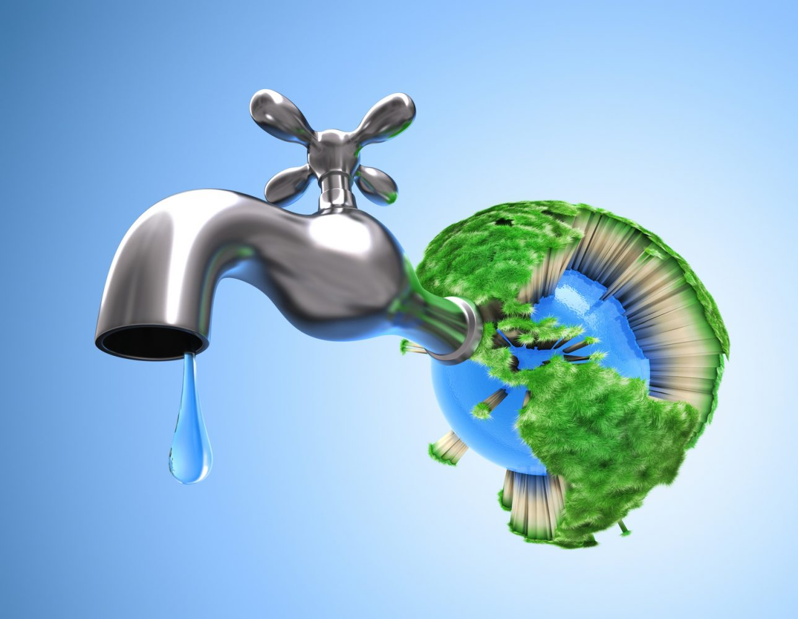

COMO CUIDAR EL AGUA---
COMPOSICIÓN DEL AGUA---
QUE ES SEQUÍA---
TIPOS DE AGUA---
VIDEO---
CURRICULUM
PROYECTO TRANSVERSAL
EL AGUA
VIDA SALUDABLE
COMO CUIDAR EL AGUA---
COMPOSICIÓN DEL AGUA---
QUE ES SEQUÍA---
TIPOS DE AGUA---
VIDEO---
CURRICULUM
PROYECTO TRANSVERSAL
EL AGUA
VIDA SALUDABLE
El agua u oxidano (H2O) es un compuesto químico inorgánico formado por dos átomos de hidrógeno (H) y uno de oxígeno (O).[3]? Esta molécula es esencial en la vida de los seres vivos, al servir de medio para el metabolismo de las biomoléculas, se encuentra en la naturaleza en sus tres estados y fue clave para su formación. Hay que distinguir entre el agua potable y el agua pura, pues la primera es una mezcla que también contiene sales en solución; es por esto que en laboratorio y en otros ámbitos se usa agua destilada.
PROPIEDADES DEL AGUA
- Proveniente del latín aqua, es el término que se usa para referirse al agua en estado líquido (entre 0 °C y 100 °C). Al encontrarse por debajo de los 100°, el agua se mantiene intacta. Por esta razón existen los océanos, mares, ríos, lagos o lagunas dispersos sobre la Tierra.
- Características físicas y químicas
El agua es inodora, incolora, e insípida, es decir, no tiene un olor propio, no tiene color ni sabor. Su importancia reside en que casi la totalidad de los procesos químicos que suceden en la naturaleza, no solo en organismos vivos sino también en la superficie no organizada de la tierra, así como los que se llevan a cabo en laboratorios y en la industria, tienen lugar entre sustancias disueltas en agua.
- Disolvente
El agua es descrita muchas veces como el solvente universal, porque disuelve muchos de los compuestos sólidos, acuosos y gaseosos conocidos. Sin embargo, no lo es (aunque es tal vez lo más cercano), porque no disuelve a todos los compuestos y, de hacerlo, no sería posible construir ningún recipiente para contenerla.
- Polaridad
Las moléculas de agua son muy polares, puesto que hay una gran diferencia de electronegatividad entre el hidrógeno y el oxígeno. Los átomos de oxígeno son mucho más electronegativos (atraen más a los electrones) que los de hidrógeno, lo que dota a los dos enlaces de una fuerte polaridad eléctrica, con un exceso de carga negativa del lado del oxígeno, y de carga positiva del lado del hidrógeno..
- Cohesión
La cohesión es la propiedad por la que las moléculas de agua se atraen entre sí. Debido a esta interacción se forman cuerpos de agua por adhesión de moléculas de agua, las gotas.
Los puentes de hidrógeno mantienen las moléculas de agua fuertemente unidas, formando una estructura compacta que la convierte en un líquido casi incompresible. Al no poder comprimirse puede funcionar en algunos animales como un esqueleto hidrostático, como ocurre en algunos gusanos perforadores capaces de agujerear la roca mediante la presión generada por sus líquidos internos
EN QUE NOS CONTRIBUYE EL AGUA
- Constituye el medio vital para la mayoría de las células del cuerpo.
- Transporta las sustancias disueltas y compone un gran porcentaje de la sangre.
- Facilita la excreción de sustancias a través de la orina, las heces y el sudor.
- Mantiene y regula la temperatura corporal.
- Brinda electrolitos y minerales indispensables para el funcionamiento eléctrico del organismo.

El agua es un tesoro, no la desperdicies
Piensa en el futuro, ahorra agua hoy
Respeta el ciclo del agua, no contamines.
CONSECUENCIAS DE SEQUIA
- MEDIO AMBIENTE
- Pérdida de biodiversidad: La sequia puede llevar a la muerte de plantas y animales que dependen del agua.
- Degradación del suelo: La falta de agua puede causar la erosión del suelo y la pérdida de nutrientes.
- Incendios forestales: La sequía puede crear condiciones propicias para incendios forestales.
- COMUNIDADES HUMANAS
- Escasez de agua potable: La sequía puede afectar la disponibilidad de agua potable para el consumo humano
- Impacto economico: La sequía puede tener un impacto significativo en la economía local y nacional, especialmente en sectores como la agricultura y la ganaderia.
- OTROS IMPACTOS
- Impacto en la energía: L a sequía puede afectar la generación de energía hidroeléctrica.
- Impacto en la infraestructura: La sequía puede causar daños a la infraestructura, como carreteras y puentes, debido a la falta de agua para el mantenimiento y la construcción.

Ahorrar agua significa ahorrar energía
El agua es vida
Cada gota cuenta.

+52 644 139 3604

cuidarelagua@gmail.com

Cuidemos el agua
Cuidemos el agua
AV.INDEPENDENCIA NO.1010
ARAM JOEL